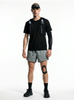
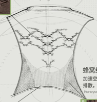
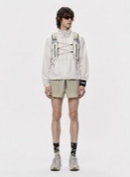
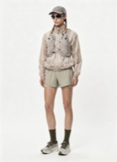
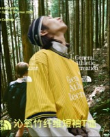
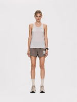
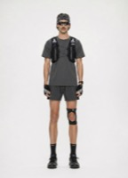

26年春夏 vs 25年春夏 | 排除市场货（销售表+商品资料合并判断，共309款）| 数据截至2026年6月
25春夏基准：30.2万件 | ¥1541万 | 毛利率24.0% | 331款
| 品类 | 26年春夏 | 25年春夏 | 销量同比 | ||||||
|---|---|---|---|---|---|---|---|---|---|
| 款数 | 净销量 | 毛利率 | 退货率 | 款数 | 净销量 | 毛利率 | 退货率 | ||
| 短袖T | 247 | 125,636 | 48.5% | 11.8% | 200 | 210,672 | 24.7% | 10.4% | -40.4% |
| 长袖T | 22 | 20,429 | 27.7% | 21.9% | 10 | 3,643 | 0.4% | 13.0% | +460.8% |
| 长裤 | 31 | 6,367 | 37.6% | 13.6% | 49 | 33,583 | 28.9% | 16.6% | -81.0% |
| 短裤 | 19 | 6,030 | 29.2% | 13.1% | 35 | 27,006 | 27.7% | 12.8% | -77.7% |
| 背心 | 18 | 5,114 | 37.5% | 12.1% | 6 | 6,041 | 27.1% | 10.5% | -15.3% |
| 外套 | 7 | 2,030 | 15.6% | 14.6% | 11 | 17,511 | 7.9% | 18.9% | -88.4% |
| 裙子 | 2 | 133 | 28.9% | 24.4% | 1 | 47 | 37.7% | 42.0% | +183.0% |
品类表统计346款（有销售记录+排除半成品/帽子/饰品）
销量同比 = (26年 ÷ 25年 - 1) × 100%
| 售罄率区间 | 款数 | 说明 |
|---|---|---|
| <30% | 99 | ⚠️ 滞销，需清货 |
| 30-50% | 83 | 偏慢，关注 |
| 50-70% | 98 | 正常 |
| 70-90% | 71 | 良好 |
| >90% | 26 | ✅ 畅销/断货风险 |
售罄率 = (期初+采购-期末) ÷ (期初+采购) × 100%
统计377款 = 进销存表中排除市场货+排除非核心品类后所有有采购或库存的款
与品类表(346款)差异：部分款已采购但尚未产生销售记录
整体售罄率 60.8%，期末库存11.7万件
按每款的件均净销额划分价格带，展示各带销量占比变化
| # | 款号 | 品类 | 采购量 | 净销量 | 期末库存 | 售罄率 | 件均价 | 退货率 | |
|---|---|---|---|---|---|---|---|---|---|
| 1 | 567SS | 短袖T | 30,176 | 23,559 | 4,374 | 85.5% | ¥25 | 7.4% | |
| 2 | 119SS | 短袖T | 25,633 | 17,484 | 4,906 | 80.9% | ¥74 | 7.1% | |
| 3 | 1194SS | 长袖T | 12,042 | 7,850 | 3,065 | 74.5% | ¥44 | 20.7% | |
| 4 | 5671SS | 短袖T | 8,371 | 5,408 | 2,879 | 65.6% | ¥25 | 16.0% | |
| 5 | 1191SS | 短袖T | 7,415 | 4,945 | 1,702 | 77.0% | ¥26 | 11.3% | |
| 6 | 5675SS | 短袖T | 6,424 | 4,675 | 1,608 | 75.0% | ¥35 | 10.2% | |
| 7 | 1195SS | 长袖T | 6,651 | 4,031 | 2,113 | 68.2% | ¥48 | 33.1% | |
| 8 | 8430S26 | 短袖T | 3,449 | 2,458 | 818 | 76.3% | ¥129 | 7.5% | |
| 9 | 8327S26 | 短袖T | 3,407 | 2,087 | 1,116 | 67.2% | ¥48 | 19.3% | |
| 10 | 1198SS | 长袖T | 3,191 | 1,988 | 1,037 | 67.5% | ¥45 | 13.5% | |
| 11 | 5672SS | 短袖T | 2,506 | 1,895 | 423 | 83.1% | ¥27 | 10.8% | |
| 12 | 8351S26 | 短袖T | 2,315 | 1,615 | 580 | 74.9% | ¥64 | 13.3% | |
| 13 | 5674SS | 短袖T | 2,669 | 1,583 | 556 | 79.2% | ¥14 | 5.0% | |
| 14 | 1199SS | 长袖T | 3,068 | 1,574 | 1,294 | 57.8% | ¥45 | 19.2% | |
| 15 | 8468S26 | 短袖T | 2,159 | 1,405 | 859 | 60.2% | ¥53 | 16.6% | |
| 16 | 8363S26 | 短袖T | 1,913 | 1,392 | 506 | 73.5% | ¥66 | 11.0% | |
| 17 | 8416S26 | 短袖T | 1,922 | 1,357 | 478 | 75.1% | ¥47 | 20.7% | |
| 18 | 1197SS | 短袖T | 2,572 | 1,348 | 1,226 | 52.3% | ¥34 | 10.3% | |
| 19 | 8373S26 | 短袖T | 1,649 | 1,305 | 357 | 78.4% | ¥45 | 12.1% | |
| 20 | 8380S26 | 短袖T | 1,934 | 1,129 | 807 | 58.3% | ¥41 | 19.5% | |
| 21 | 5676SS | 背心 | 1,884 | 1,108 | 640 | 66.0% | ¥29 | 18.2% | |
| 22 | 8510S26 | 短袖T | 1,032 | 1,096 | 585 | 43.3% | ¥29 | 7.4% | |
| 23 | 8372S26 | 短袖T | 2,085 | 1,061 | 969 | 53.5% | ¥37 | 17.8% | |
| 24 | 8387S26 | 短袖T | 1,779 | 1,053 | 652 | 63.4% | ¥53 | 14.7% | |
| 25 | 3502S26 | 长袖T | 1,417 | 1,037 | 355 | 74.9% | ¥62 | 9.8% | |
| 26 | 8326S26 | 短袖T | 1,649 | 1,032 | 704 | 57.3% | ¥46 | 10.6% | |
| 27 | 12990S26 | 长裤 | 1,694 | 1,015 | 375 | 77.9% | ¥61 | 7.1% | |
| 28 | 8370S26 | 短袖T | 1,376 | 1,006 | 382 | 72.2% | ¥47 | 18.3% | |
| 29 | 12972S26 | 短裤 | 1,541 | 871 | 317 | 79.4% | ¥49 | 16.2% | |
| 30 | 8439S26 | 短袖T | 1,725 | 835 | 783 | 54.6% | ¥56 | 16.5% | |
| 31 | 8440S26 | 短袖T | 1,415 | 829 | 569 | 59.8% | ¥46 | 8.1% | |
| 32 | 12996S26 | 短裤 | 1,125 | 817 | 235 | 79.1% | ¥24 | 4.0% | |
| 33 | 8431S26 | 短袖T | 1,365 | 811 | 95 | 93.0% | ¥36 | 3.7% | |
| 34 | 8340S26 | 短袖T | 923 | 790 | 152 | 83.5% | ¥55 | 11.9% | |
| 35 | 8346S26 | 短袖T | 930 | 783 | 184 | 80.2% | ¥62 | 15.1% | |
| 36 | 8450S26 | 短袖T | 1,182 | 782 | 421 | 64.4% | ¥184 | 20.2% | |
| 37 | 12962S26 | 短裤 | 1,579 | 733 | 721 | 54.3% | ¥46 | 8.8% | |
| 38 | 8417S26 | 短袖T | 1,063 | 728 | 351 | 67.0% | ¥49 | 9.2% | |
| 39 | - | 1196SS | 短袖T | 2,342 | 721 | 1,579 | 32.6% | ¥31 | 7.3% |
| 40 | - | 8366S26 | 短袖T | 2,485 | 704 | 1,777 | 28.5% | ¥31 | 7.9% |
| 41 | - | 8381S26 | 短袖T | 1,388 | 678 | 778 | 43.9% | ¥38 | 10.9% |
| 42 | 8423S26 | 短袖T | 1,043 | 669 | 372 | 64.3% | ¥46 | 25.9% | |
| 43 | - | 12965S26 | 短裤 | 1,722 | 651 | 1,149 | 33.3% | ¥59 | 21.7% |
| 44 | 8466S26 | 短袖T | 1,100 | 646 | 322 | 70.7% | ¥47 | 5.8% | |
| 45 |  | 8547S26 | 短袖T | 1,352 | 643 | 724 | 46.4% | ¥37 | 9.1% |
| 46 | 13017S26 | 长裤 | 1,586 | 642 | 705 | 55.5% | ¥84 | 24.6% | |
| 47 | 3503S26 | 长袖T | 1,230 | 630 | 501 | 59.3% | ¥62 | 13.0% | |
| 48 | 12970S26 | 短裤 | 1,264 | 625 | 516 | 59.2% | ¥55 | 14.6% | |
| 49 | - | 12975S26 | 长裤 | 1,465 | 613 | 807 | 44.9% | ¥96 | 7.4% |
| 50 | 4062S26 | 背心 | 1,418 | 606 | 395 | 72.1% | ¥37 | 8.9% |
筛选条件：期末库存>500件 + 售罄率<50% | 结合采购单分析补货问题点
| # | 图片 | 款号 | 品类 | 采购量 | 期末库存 | 售罄率 | 采购次数 | 首次采购 | 末次采购 | 问题诊断 |
|---|---|---|---|---|---|---|---|---|---|---|
| 1 |  | 8549S26 | 短袖T | 2,400 | 2,249 | 6.7% | 1 | 2026/4/18 | 2026/4/18 | 严重滞销 库存>采购60%未消化 首单2400件偏大 |
| 2 | 8366S26 | 短袖T | 2,320 | 1,777 | 28.5% | 2 | 2026/1/8 1 | 2026/6/5 1 | 滞销 库存>采购60%未消化 | |
| 3 | 1196SS | 短袖T | 2,000 | 1,579 | 32.6% | 4 | 2026/1/27 | 2026/6/24 | 补货4次过多 库存>采购60%未消化 | |
| 4 | - | 8409S26 | 短袖T | 1,890 | 1,376 | 26.9% | 4 | 2026/1/14 | 2026/4/2 1 | 补货4次过多 滞销 库存>采购60%未消化 |
| 5 | - | 8410S26 | 短袖T | 1,700 | 1,331 | 19.4% | 2 | 2026/1/14 | 2026/1/14 | 严重滞销 库存>采购60%未消化 |
| 6 |  | 13024S26 | 短裤 | 1,500 | 1,201 | 20.9% | 1 | 2026/5/3 1 | 2026/5/3 1 | 滞销 库存>采购60%未消化 首单1500件偏大 |
| 7 | 12965S26 | 短裤 | 1,790 | 1,149 | 33.3% | 2 | 2026/1/15 | 2026/4/17 | 库存>采购60%未消化 | |
| 8 |  | 13025S26 | 短裤 | 1,300 | 1,085 | 15.3% | 1 | 2026/5/3 1 | 2026/5/3 1 | 严重滞销 库存>采购60%未消化 首单1300件偏大 |
| 9 | 4064S26 | 背心 | 1,200 | 1,032 | 16.3% | 1 | 2026/4/18 | 2026/4/18 | 严重滞销 库存>采购60%未消化 首单1200件偏大 | |
| 10 | - | 8371S26 | 短袖T | 1,040 | 880 | 26.0% | 1 | 2026/1/7 1 | 2026/1/7 1 | 滞销 库存>采购60%未消化 首单1040件偏大 |
| 11 |  | 8571S26 | 短袖T | 1,020 | 858 | 24.2% | 2 | 2026/4/24 | 2026/6/4 1 | 滞销 库存>采购60%未消化 |
| 12 | 8583S26 | 短袖T | 540 | 857 | 33.4% | 1 | 2026/5/15 | 2026/5/15 | 库存>采购60%未消化 | |
| 13 |  | 8576S26 | 短袖T | 1,500 | 846 | 47.1% | 2 | 2026/5/14 | 2026/6/24 | — |
| 14 | 12975S26 | 长裤 | 1,600 | 807 | 44.9% | 2 | 2026/3/26 | 2026/5/12 | — | |
| 15 |  | 8585S26 | 短袖T | 980 | 795 | 29.2% | 1 | 2026/5/30 | 2026/5/30 | 滞销 库存>采购60%未消化 |
| 16 | 8381S26 | 短袖T | 1,380 | 778 | 43.9% | 4 | 2026/1/8 1 | 2026/5/4 1 | 补货4次过多 | |
| 17 | - | 8408S26 | 短袖T | 660 | 727 | 8.1% | 1 | 2026/1/22 | 2026/1/22 | 严重滞销 库存>采购60%未消化 |
| 18 | 8547S26 | 短袖T | 1,400 | 724 | 46.4% | 1 | 2026/4/13 | 2026/4/13 | 首单1400件偏大 | |
| 19 | - | 8375S26 | 短袖T | 780 | 723 | 17.2% | 1 | 2026/1/8 1 | 2026/1/8 1 | 严重滞销 库存>采购60%未消化 |
| 20 | - | 8368S26 | 短袖T | 1,180 | 711 | 44.2% | 2 | 2026/1/3 1 | 2026/3/30 | 库存>采购60%未消化 |
| 品类 | 26年 | 27年建议 | 方向 |
|---|---|---|---|
| 短袖T | 247款 | 150-180款 | 精简，聚焦¥21-35跑量+¥51-80利润带 |
| 长袖T | 22款 | 40-50款 | 款效最高，扩品+解决退货率 |
| 短裤 | 19款 | 50-60款 | 扩品结合运动趋势 |
| 长裤 | 31款 | 40-50款 | 缩减低效款 |
| 外套 | 7款 | 15-20款 | 春夏薄款，提升毛利率 |
| 背心 | 18款 | 20-25款 | 适当扩充 |
26年做对了：
26年的问题：
27年策略：减款提效、扩强砍弱、面料聚焦、提前铺货。